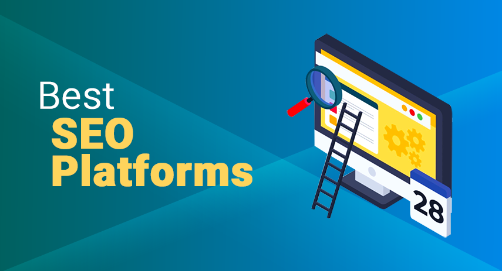
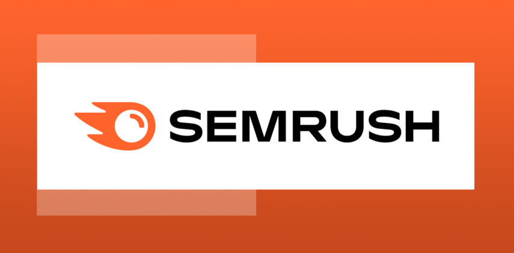
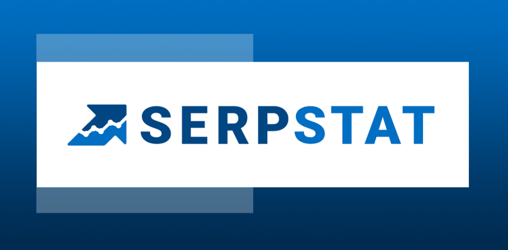

The top SEO platforms to improve site rankings
Scott Leavey | Updated on February 8th 2024SEO and Online Marketing Consultant In a hurry? Here’s the top SEO platform for 2025:
Take your or your client’s website to the next level with these industry-leading SEO platforms.
Whether it's for your website or your clients, it pays to use the best SEO tools in the market. After all, there are about 2 billion websites as of 2025. If you want your website to be found, you're going to need a successful SEO campaign. Why is it essential for your website to rank? According to a study by BrightEdge, 53% of all web traffic comes from organic search. What's more, research shows that organic traffic is more important than paid traffic from Google, Facebook, Instagram, YouTube, Tiktok, and other social media networks.
Compared to paid traffic, organic traffic is more targeted. For example, how many times have you clicked on an ad that showed up in your Facebook feed? Unless you previously looked that product up somewhere (which means these ads are retargeting you), you'd probably keep scrolling. Compare this to people who are actively looking up products or services in search engines. These people have an intent to buy or engage and are therefore more likely to convert. And get this, Google accounts for more than 90% of this traffic. Thus, it makes sense that you'd want your website to rank as highly as possible using SEO. Doing so will save your business thousands of dollars in paid advertising, build credibility, and increase consumer trust.
An overview of the best SEO platforms for 2025:
- 🥇 1. SEMRush — Best for keyword research, backlinks, and website optimization, this powerful all-in-one SEO platform is our top recommendation. With features like Domain vs. Domain analysis, On-Page SEO Checker, and over 200 million unique domains, it's a must-have for any organization serious about its online presence.
- 🥈 2. Serpstat — Ideal for entrepreneurs, agencies, and SEO specialists, Serpstat is a cloud-based SEO platform. It also comes with unique features not found in other tools, such as Missing Keywords, Team Management, and more.
- 🥉 3. Sitechecker — This platform boasts a solid database, comprehensive analytics, robust keyword research functionality, and generous tracking limits.
- Frequently Asked Questions about SEO platforms (FAQ).
Okay, but why do I need an SEO platform? Can't I do SEO manually?
Of course, it is possible to do manual SEO. However, the human element makes the process tedious, time-consuming, and prone to error. Imagine if you're using multiple spreadsheets to do your keyword research, monitor search engine rankings, or perform website audits. What if you have to submit 20 websites to search engines? And what if you're doing SEO campaigns for multiple clients? With thousands of keywords, images, and pages to optimize, the whole process could take months or even years!
Using an SEO platform can automate the process - boosting efficiency and productivity while reducing time, errors, and costs. Here are some more benefits of using a top SEO platform:
- Streamline management. If you're doing SEO for multiple websites or a large organization, it isn't easy keeping track of different tools and processes. An SEO software resolves this issue by providing all your required SEO functionalities in a single platform. This streamlines your workflow and makes it easy to conduct an SEO analysis. It also makes it easy to coordinate, manage, and complete tasks without losing track of any components.
- Better search ranking, increased traffic, more profits. The best SEO platform can help build an efficient and effective SEO strategy. It can tackle on-site SEO, optimize your website, create strong backlinks, and ensure that all your campaigns are properly executed. Over time, your efforts will lead to higher search rankings, increased website visitors, and higher conversion!
- Automated reporting and real-time data. Do you have clients who constantly ask you for updates about your SEO campaigns? Well, no need to skip lunch to pull up spreadsheets and update data manually. Good SEO software offers highly customized and up-to-date reports, eliminating the need for regular check-ins.
- Simplify reporting. Not every stakeholder is good with numbers. An SEO tool can help simplify reporting to bridge the gap between SEO experts and the rest of the organization. Save everyone's time and sanity by breaking down numbers and complex data in a way that's easier to understand. Use engaging and straightforward graphs, charts, and other data visualization tools.
- Stay ahead of SEO trends. SEO is an ongoing process, not a one-time event. Do you know how fast SEO is fluctuating? Last year alone, Google reported more than 3,000 updates on their algorithm. They make changes daily and can even release multiple updates in 24 hours. Some of these updates can impact page rankings, so it's important to stay up-to-date and adapt to these changes. Otherwise, your competition will leave you behind. SEO platforms have dedicated teams and engineers that follow and keep up with search engine algorithms. If necessary, they will release new features to adapt to new trends and changing rules. This way, your business stays on top of the SEO game.
- Track and measure your SEO progress at a glance. It is vital to monitor metrics to see what's working and what's not in your SEO strategy. Whether it's checking your rankings, organic traffic, leads, engagement, and conversion, a good SEO platform makes it easy to calculate these metrics on the fly. You'll be able to keep track and measure your SEO progress and manage hiccups early on.
- Manage routine or repetitive tasks.No one looks forward to doing manual, repetitive tasks. It's boring, error-prone, and demotivating. Unfortunately, there's plenty of these tedious tasks in SEO. From checking for duplicate content to finding broken links – without automation, you'll end up hating your job. Stop wasting time and use an SEO platform! Doing so will free up time so you can focus on analysis, process optimization, and more.
- Find new strategies and untapped growth opportunities. All of the SEO platforms on our site feature a competitor analysis tool that will help you step back and survey the landscape to see where you stand. Who are your competitors? Where is their traffic coming from? What keywords are they ranking for (that you don't)? When you have the answers to these questions, you'll be able to develop fresh ideas and implement them in your strategy.
Awesome! So now that you know the importance of a good SEO platform, let's take an in-depth look at the top SEO tools in 2025.
1. SEMRush — The Swiss Army Knife of SEO Tools

A long-time favorite among business owners and marketing agencies, SEMRush makes SEO analysis, strategy formulation, and other time-consuming initiatives easy, fast, and efficient. Experts love that it lets you access and analyze data almost instantly and identify changes and new ranking opportunities. The Organic Traffic Insights feature combines your Google Analytics, Google Search Console, and Semrush data into one convenient dashboard. View pertinent data like click-through rates, organic keywords, rankings, sessions, and more. If you're a blogger, you'll be able to see your popular posts, along with information on keywords, social shares, and word count. SEMRush makes it easy to see what's working, where you need to optimize or underpin any client recommendations.
Another standout feature is the SEO Writing Assistant — a Google Docs add-on that automatically scans your content for SEO-friendliness. It gives actionable suggestions as you type to improve your content's readability, tone of voice, and originality to drive up SEO scores. In addition, their Keyword Magic Tool is nothing short of, well, magical, as it makes keyword research incredibly easy. The Keyword Gap Analysis lets you do a Domain vs. Domain analysis to compare your keywords to your competitor's site to discover unique keywords and other opportunities you may be missing.
Semrush may not be the cheapest option around but remember that you're not only paying for the comprehensive tools and reports. You're also paying for access to a whole lot of data — over 808 million domain profiles, 43 trillion backlinks, and 20 billion keywords from 118 countries' databases. SEMrush owns by far the largest keyword database on the market! We recommend Semrush to anyone who does SEO on their own or as part of a marketing agency. It's scalable, so whether you're a mommy blogger, a small business owner, or a large organization, you can find value with the tool. Try it risk-free with their 7-Day Money-Back Guarantee!
Get SEMRush - One-click SEO!
2. Serpstat — Game-changer Missing Keywords feature

Serpstat is a client-oriented SEO platform with over 250,000 users globally. It is packed with all the tools you need for a strong SEO campaign — daily rank tracking, keyword analysis, competitor analysis, backlink analysis, site audit, SEO research, PPC research, and more. We like how Serpstat's interface design is clean and laid out logically, so even SEO beginners won't have a hard time analyzing detailed analytics information. It allows up to 7 users, making it ideal for in-house teams, marketing agencies, and big enterprises.
Serpstat also boasts of unique features you'll hardly see in other digital marketing tools. The Missing Keyword, for example, identifies keywords that your competitors are ranking for but are missing on your site. Discover pages that rank on the second page of Google using Tree View and use Cluster Research to expand your keyword pool. Finally, the Search Suggestions feature lets you find all search queries related to your keyword.
Serpstat is an affordable all-in-one SEO tool ideal for SEO specialists, analytics experts, SEM specialists, content managers, and digital marketers. They currently have four plans available that cater to businesses of all sizes. If you're still on the fence, you can sign up for a free trial to test the platform before committing to a paid plan.
Get Serpstat - One-click SEO!
How we chose the Top SEO Platform Brands for 2025
Our recommendation above results from over 50 hours of research on the top-ranking SEO software in the industry. Whether it's your first foray into the SEO game or you're looking to upgrade your current tool, we hope this helps narrow down your options. While every brand on this page strikes the perfect balance between cost, efficiency, and scalable features, we gave particular attention to the following factors:
- Keyword research tools
- Competitor analysis tools
- Backlink tools
- Reporting features
- Link building tools
- Website monitoring tools
- Local SEO tools
- User interface
Top SEO Platforms - Frequently Asked Questions (FAQ)
📊 What are SEO platforms?
SEO platforms are software systems that bring together many of the tools needed to optimize or improve site ranking. These tools address SEO functionalities such as keyword research, competitor analysis, rank tracking, content marketing analytics, link building, on-page SEO, and many more.
📅 How long does SEO take?
It usually takes between 4 to 12 months to start seeing results from your SEO efforts. Bear in mind that several factors can impact this timeframe, such as your website's history, competition, and resources.
📉 Why don't I advertise and skip SEO altogether?
SEO and PPC (Pay-Per-Click) are not mutually exclusive. These two traffic-generating approaches complement each other and give better results when combined. However, there are several advantages to using SEO. Customers usually trust websites that show up at the top of the organic search results because they know they are not advertisements. Organic listings also typically have better click-through rates, longevity, and better reach than paid search ads.
💵 What is the best free SEO tool?
There are tons of free SEO tools out there, but their features are limited compared to full-fledged SEO platforms. However, if you just want to do keyword research or stay on top of your analytics, you can check out free tools like Answer the Public, Google Analytics, and Ubersuggest.
Transparency and Trust: The aim of this website is to help you find the perfect software for your needs in an easy-to-view comparison list. You can read more about how we review and about our background in the About Us section of this website. Software.fish does not feature all of the software available in the market, we cherry-pick what we consider to be the leaders in each vertical. We try to keep this site updated and fresh, but cannot guarantee the accuracy of the information as well as the prices featured at all times. All prices quoted on this site are based on USD so there could be slight discrepancies due to currency fluctuations. Although the site is free to use, we do earn commissions from the software companies that we have partnered with. If you click on one of our links and then make a purchase, we will get paid by that company. This has an impact on the ranking, score, and order in which the software is presented in our list and elsewhere throughout the site. Software listings on this page DO NOT imply endorsement.